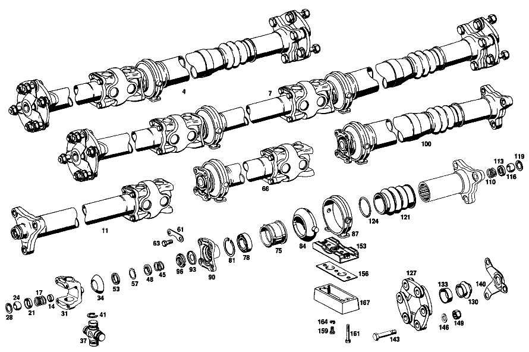

| № | Артикул | Название | Кол. | Примечание |
|---|---|---|---|---|
| 7 | A 100 410 18 06 | КАРДАННЫЙ ВАЛ | 1 | |
| 11 | A 100 410 33 01 | - КАРДАННЫЙ ВАЛ | 1 | СПЕРЕДИ |
| 14 | N 000443 020000 | - Запорная крышка | 1 | |
| 17 | A 184 993 04 01 | - ПРУЖИНА | 1 | |
| 21 | A 136 411 01 18 | - Шаровой подпятник | 1 | |
| 24 | A 184 411 00 17 | - ШАРИК ЦЕНТРИРУЮЩАЯ | 1 | |
| 28 | N 000472 028000 | - Стопорное кольцо | 1 | |
| 31 | A 100 411 57 45 | - ФЛАНЕЦ | 1 | СПЕРЕДИ |
| 34 | A 100 411 06 97 | - МАНЖЕТА | 1 | |
| 37 | A 100 410 01 31 | - КРЕСТОВИНА | 2 | |
| 41 | A 188 994 05 34 | - Пруж. стопорное кольцо | 8 | ПО НЕОБХОДИМОСТИ 1.45 MM |
| 45 | A 100 993 89 01 | - ПРУЖИНА | 1 | |
| 48 | A 100 411 10 18 | - ПОДПЯТНИК ШАРОВОЙ | 1 | |
| 53 | A 003 997 96 46 | - УПЛОТНИТ. КОЛЬЦО | 1 | |
| 57 | A 000 994 70 41 | - ПРЕДОХРАНИТЕЛЬ | 1 | |
| 61 | A 100 994 03 25 | - ПРЕДОХРАНИТЕЛЬ | 2 | |
| 63 | A 100 990 29 01 | - БОЛТ | 4 | |
| 66 | A 100 410 15 05 | - ПРОМЕЖУТОЧНЫЙ ВАЛ | 1 | |
| 75 | A 110 413 04 01 | - КОРПУС | - | |
| 75 | A 110 410 04 22 | - Опора карданного вала | 1 | |
| 78 | A 003 981 23 25 | - ШАРИКОПОДШИПНИК | 1 | |
| 81 | N 000472 055000 | - Стопорное кольцо | 1 | 55X2 |
| 84 | A 100 413 05 12 | - САЙЛЕНТ-БЛОК | 1 | |
| 87 | A 100 410 01 39 | - ОПОРА ПОДШИПНИКА | 1 | |
| 90 | A 100 411 62 45 | - ФЛАНЕЦ | 1 | |
| 93 | A 111 994 00 43 | - ПРЕДОХРАНИТЕЛЬ | 1 | |
| 96 | A 111 990 00 60 | - ГАЙКА | 1 | |
| 100 | A 100 410 14 02 | - КАРДАННЫЙ ВАЛ | 1 | СЗАДИ |
| 110 | A 184 993 04 01 | - ПРУЖИНА | 1 | |
| 113 | A 136 411 01 18 | - Шаровой подпятник | 1 | |
| 116 | A 184 411 00 17 | - ШАРИК ЦЕНТРИРУЮЩАЯ | 1 | |
| 119 | N 000472 028000 | - Стопорное кольцо | 1 | |
| 121 | A 100 411 04 97 | - МАНЖЕТА | 1 | |
| 124 | A 100 411 00 51 | - ДИСТАНЦИОННОЕ КОЛЬЦО | 2 | |
| 127 | A 100 411 02 15 | - ДИСК ШАРНИРА | 2 | |
| 130 | A 100 411 09 97 | - МАНЖЕТА | 2 | |
| 133 | A 100 411 00 08 | - НАПРАВЛЯЮЩАЯ | 2 | |
| 140 | A 100 411 04 40 | - ДЕРЖАТЕЛЬ | 2 | |
| 143 | A 100 411 16 71 | - БОЛТ | 12 | |
| 146 | A 187 990 14 40 | - Диск | 12 | |
| 149 | N 913002 012002 | - Гайка | 12 | |
| 153 | A 100 410 08 81 | ОПОРА | 2 | |
| 156 | A 100 413 01 11 | УСИЛИТЕЛЬ | 2 | |
| 159 | N 304017 008016 | Винт с 6-гранной головкой | 10 | M8X16 |
| 164 | N 912004 008102 | Пружинное кольцо | 10 | |
| A 100 410 10 01 | - КАРДАННЫЙ ВАЛ | 1 | СПЕРЕДИ | |
| A 100 411 14 18 | - ПОДПЯТНИК ШАРОВОЙ | 1 | ||
| A 100 411 38 45 | - ФЛАНЕЦ | 1 | СПЕРЕДИ | |
| A 188 994 00 34 | - Пруж. стопорное кольцо | 8 | ПО НЕОБХОДИМОСТИ 1.50 MM | |
| A 188 994 02 34 | - СТОПОРН. КОЛЬЦО | 8 | ПО НЕОБХОДИМОСТИ 1.60 MM | |
| A 188 994 03 34 | - Пруж. стопорное кольцо | 8 | ПО НЕОБХОДИМОСТИ 1.65 MM | |
| A 188 994 04 34 | - Пруж. стопорное кольцо | 8 | ПО НЕОБХОДИМОСТИ 1.70 MM | |
| A 100 994 01 25 | - ПРЕДОХРАНИТЕЛЬ | - | ||
| A 100 994 03 25 | - ПРЕДОХРАНИТЕЛЬ | 2 | ||
| A 100 990 16 01 | - БОЛТ | 4 | ||
| A 100 410 02 05 | - ПРОМЕЖУТОЧНЫЙ ВАЛ | 1 | ||
| A 100 411 38 45 | - ФЛАНЕЦ | 1 | ||
| A 100 411 57 45 | - ФЛАНЕЦ | 1 | ||
| A 100 411 06 97 | - МАНЖЕТА | 1 | ||
| A 100 410 01 31 | - КРЕСТОВИНА | 2 | ||
| A 188 994 05 34 | - Пруж. стопорное кольцо | 8 | ПО НЕОБХОДИМОСТИ 1.45 MM | |
| A 188 994 00 34 | - Пруж. стопорное кольцо | 8 | ПО НЕОБХОДИМОСТИ 1.50 MM | |
| A 188 994 02 34 | - СТОПОРН. КОЛЬЦО | 8 | ПО НЕОБХОДИМОСТИ 1.60 MM | |
| A 188 994 03 34 | - Пруж. стопорное кольцо | 8 | ПО НЕОБХОДИМОСТИ 1.65 MM | |
| A 188 994 04 34 | - Пруж. стопорное кольцо | 8 | ПО НЕОБХОДИМОСТИ 1.70 MM | |
| A 100 993 21 01 | - ПРУЖИНА | - | ||
| A 100 993 89 01 | - ПРУЖИНА | 1 | ||
| A 100 411 10 18 | - ПОДПЯТНИК ШАРОВОЙ | 1 | ||
| A 003 997 96 46 | - УПЛОТНИТ. КОЛЬЦО | 1 | ||
| A 000 994 70 41 | - ПРЕДОХРАНИТЕЛЬ | 1 | ||
| A 100 994 01 25 | - ПРЕДОХРАНИТЕЛЬ | - | ||
| A 100 994 03 25 | - ПРЕДОХРАНИТЕЛЬ | 2 | ||
| A 100 994 03 25 | - ПРЕДОХРАНИТЕЛЬ | 2 | ||
| A 100 990 16 01 | - БОЛТ | 4 | ||
| A 100 990 29 01 | - БОЛТ | 4 | ||
| A 100 411 37 45 | - ФЛАНЕЦ | 1 | ||
| A 100 994 01 25 | - ПРЕДОХРАНИТЕЛЬ | - | ||
| A 100 994 03 25 | - ПРЕДОХРАНИТЕЛЬ | 2 | ||
| A 100 994 03 25 | - ПРЕДОХРАНИТЕЛЬ | 2 | ||
| A 100 990 16 01 | - БОЛТ | 4 | ||
| A 100 990 29 01 | - БОЛТ | 4 | ||
| A 100 410 21 02 | - КАРДАННЫЙ ВАЛ | 1 | СЗАДИ | |
| A 110 413 04 01 | - КОРПУС | - | ||
| A 110 410 04 22 | - Опора карданного вала | 1 | ||
| A 003 981 23 25 | - ШАРИКОПОДШИПНИК | 1 | ||
| N 000472 055000 | - Стопорное кольцо | 1 | 55X2 | |
| A 100 413 05 12 | - САЙЛЕНТ-БЛОК | 1 | ||
| A 100 410 01 39 | - ОПОРА ПОДШИПНИКА | 1 | ||
| A 100 411 37 45 | - ФЛАНЕЦ | 1 | ||
| A 100 411 62 45 | - ФЛАНЕЦ | 1 | ||
| A 111 994 00 43 | - ПРЕДОХРАНИТЕЛЬ | 1 | ||
| A 111 990 00 60 | - ГАЙКА | 1 | ||
| A 100 411 14 18 | - ПОДПЯТНИК ШАРОВОЙ | 1 | ||
| N 916001 050000 | - ХОМУТ | 1 | ||
| N 916026 050000 | - Хомут | - | 50\-70MM | |
| A 006 997 26 90 | - Шланговый хомут | 1 | 50\-70/9 C7 W3 | |
| A 100 994 01 25 | - ПРЕДОХРАНИТЕЛЬ | - | ||
| A 100 994 03 25 | - ПРЕДОХРАНИТЕЛЬ | 2 | ||
| A 100 994 03 25 | - ПРЕДОХРАНИТЕЛЬ | 2 | ||
| A 100 990 16 01 | - БОЛТ | 4 | ||
| A 100 990 29 01 | - БОЛТ | 4 | ||
| A 100 413 00 84 | ВКЛАДКА | 1 |
Позиций: 102 · подписано на схемах: 45 · колесо — плавный зум в курсор, перетаскивание — пан, двойной клик — зум, клик по артикулу — скопировать.